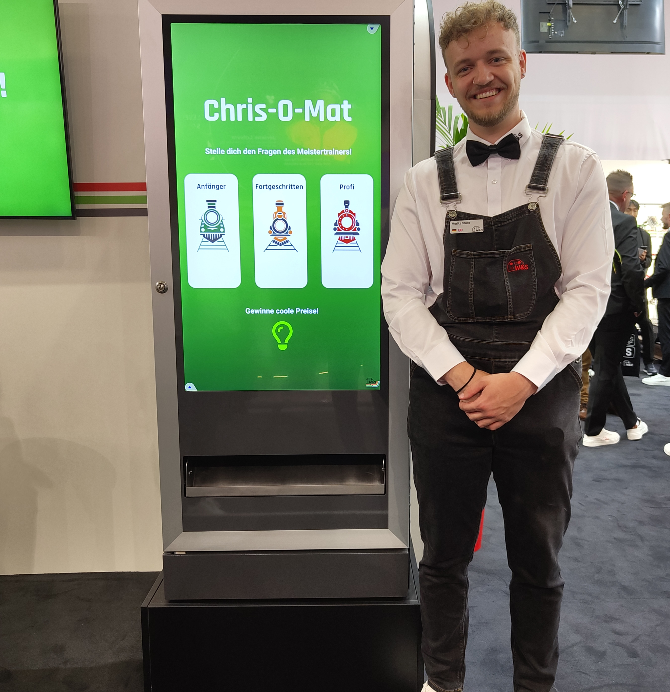

Mein Name ist Moritz Staat, und ich habe 2019 mein Abitur in Frankfurt am Main mit einem starken Fokus auf mathematischen und analytischen Fächern abgeschlossen. Direkt im Anschluss zog ich nach Dortmund, um dort Wirtschaftswissenschaften zu studieren, wobei ich mich auf Marketing sowie Technologie- und Informationsmanagement spezialisierte. Mein Studium habe ich im Jahr 2024 erfolgreich mit dem Bachelor of Science abgeschlossen. Meine Begeisterung für quantitative Analysen und komplexe Datenstrukturen spiegelt sich in meiner Vorliebe für statistische Methoden und datengetriebenes Marketing wider.
Seit März 2022 bin ich als Werkstudent bei der W&S Technik GmbH in Castrop Rauxel tätig. In meiner Rolle übernehme ich vor allem die Gewinnung und Integration neuer Marktplätze über Plattformen wie ARIBA, einem führenden digitalen B2B-Marktplatz. Dabei liegt mein Schwerpunkt auf der Optimierung von Prozessen zur Marktplatzintegration und der Abbildung effizienter Vertriebswege. Zudem arbeite ich im Web Development, wo ich Weblösungen für die Vermarktung und den Vertrieb des Unternehmens mitentwickle. Meine Erfahrungen reichen von der technischen Umsetzung bis hin zur strategischen Planung und Prozessoptimierung.
Im Juni 2023 habe ich zusammen mit Niklas Herzog und Philipp Sowik die App SparMahl gegründet. Unsere App kombiniert modernste Künstliche Intelligenz (KI) mit Web Crawler-Technologien, um alle aktuellen Supermarktangebote zu analysieren und daraus die besten Rezeptvorschläge zu generieren. Kernstück von SparMahl ist ein eigens entwickeltes Large Language Model (LLM), das in Echtzeit Daten verarbeitet und Einkaufslisten basierend auf den besten Angeboten erstellt. Mit dieser datengetriebenen Lösung ermöglichen wir den Nutzern eine kostengünstige und effiziente Einkaufsplanung und erschließen gleichzeitig neue Wege im Lebensmitteleinzelhandel.

Innotrans 2024
Folge mir auf Social Media